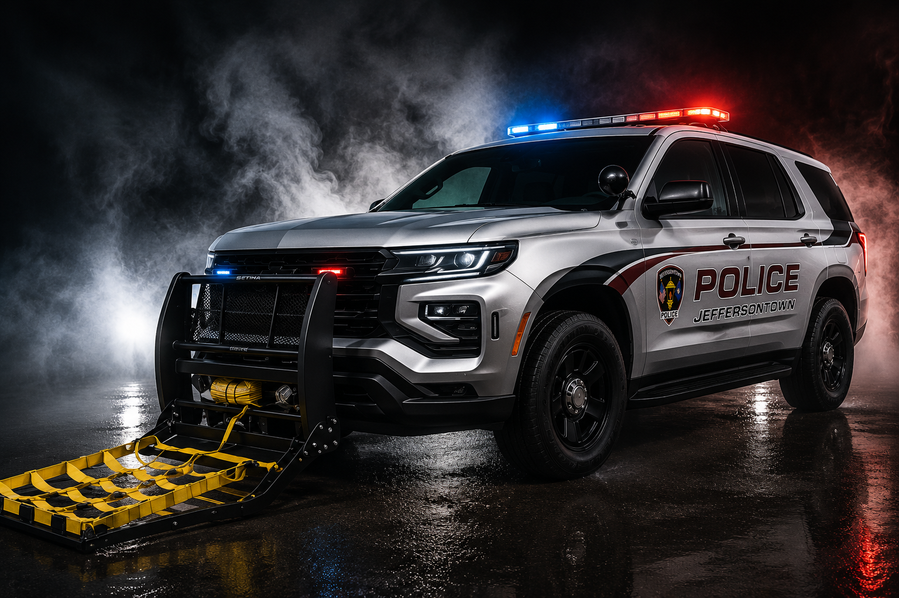

the Public
High-speed pursuits put innocent drivers, pedestrians and bystanders at risk.


The Grappler™ gives trained officers another option to bring dangerous vehicle pursuits to a more controlled end—helping protect the public, officers and everyone sharing the road.
SUPPORT THE GRAPPLER INITIATIVE
High-speed pursuits put innocent drivers, pedestrians and bystanders at risk.
Pursuits are one of the most dangerous activities officers face on duty.
The Grappler helps end pursuits sooner, reducing distance, speed and risk.
Gives officers a tactical alternative when conditions are right to safely intervene.
The officer approaches the fleeing vehicle within the effective deployment range.
The Grappler™ deploys from the front of the vehicle toward the rear tires of the target.
The yellow webbing captures the rear wheel area and helps bring the vehicle toward a controlled stop.
Fewer high-speed pursuits can mean less exposure to risk for drivers, pedestrians and the community.
Adds another specialized tool that can help trained officers make safer, more controlled decisions.
Your contribution to the Jeffersontown Police Foundation can help fund equipment that gives officers another tool to protect the public, themselves and the people they encounter every day.